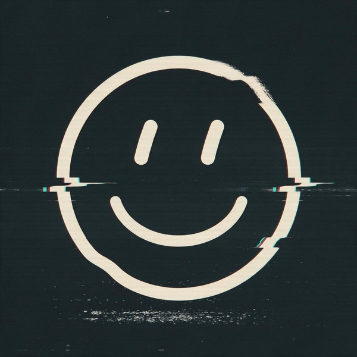

AfterX
Estudiante de informática y creador de contenido en español.
SEÑAL OKEn línea
Ver mi canal de YouTube
Sobre mí
Soy After, estudiante de informática en Valencia. Me interesan la programación, Linux y el hardware.
En YouTube hago vídeos de opinión y comentario en español, en el canal AfterXEsp_. Esta página reúne lo que hago: mis proyectos y mi canal.

Setup
Equipo
AMD Ryzen 7 7700X (8C/16T) · NVIDIA GeForce RTX 5060 Ti 16GB · 32 GB DDR5 · Pantalla 1440p @ 180Hz
Sistema
CachyOS Linux (Kernel optimizado) · KDE Plasma, GNOME y Hyprland · Terminal Kitty con Fish/Zsh
Programas
VSCodium para desarrollo · OBS Studio para grabación · Kdenlive para edición de vídeo